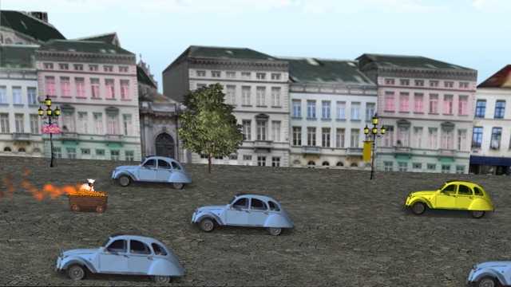
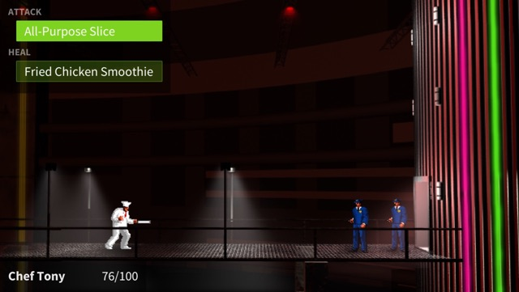

<div class="section cols left_pic">
	<div>
		
	</div>

	<div>
		<blockquote>
			Final Fantasy's story is <b>nothing</b> compared to this <b>thrilling</b> RPG
			<p class="attribution">
				<a href="https://twitter.com/OldManCricky/status/560549287449227265">
					&#x2015;CrickySoupDoupLP
				</a>
			</p>
		</blockquote>
	</div>
</div> <!-- div.cols -->

<div class="section">
	<h3>Written in C# using <a href="http://unity3d.com/">Unity</a>.</h3>
	<small>Download the source code on
	<a href="https://github.com/freakified/jga/">Github</a>
	or the
	<a href="https://www.assetstore.unity3d.com/en/#!/content/25856">Unity Asset Store</a></small>
</div>

<div class="section">
	
</div>

<div class="section">
	<h3>Original soundtrack!</h3>
	<iframe width="100%" height="166" style="max-width: 640px" scrolling="no" frameborder="no" src="https://w.soundcloud.com/player/?url=https%3A//api.soundcloud.com/tracks/178779794&amp;color=ff5500&amp;auto_play=false&amp;hide_related=false&amp;show_comments=true&amp;show_user=true&amp;show_reposts=false"></iframe>
	<small>Download the full soundtrack at <a href="https://soundcloud.com/freakified/sets/jga-crossroads-of-destiny-ost">Soundcloud</a></small>
</div>

<div class="section cols left_pic">
	<div>
		
	</div>

	<div class="pic_desc">
		Turn-based battle system supports touch, gamepad, mouse, and keyboard input.
	</div>
</div> <!-- div.cols -->

<div class="section cols left_pic">
	<div>
		
	</div>
	<div class="pic_desc">
		Screenplay-based cutscene system makes it easy to include long-winded expository dialog sequences.
	</div>
</div> <!-- div.cols -->

<div class="section">
	<h3>Want to play it?</h3>
	<small><a href="http://freakified.github.io/jga/">	Download at the project page</a><br />
		<br />
		<a href="https://play.google.com/store/apps/details?id=net.freakified.jga">
		
			</a>
	</small>
</div>
